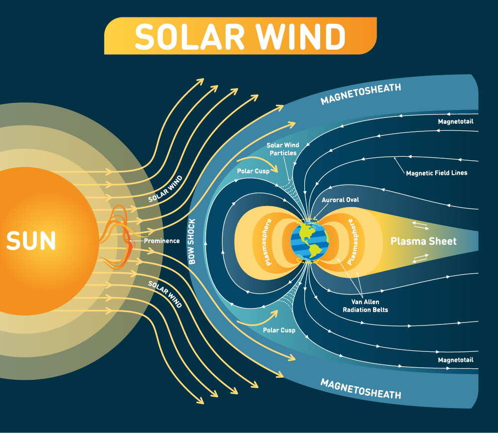

ABOUT
This is a short website about Solar Flares, how they form, why they form and their impact on Earth. Here you will find live data from a NASA API that tracks active events in space, in the case of this website, Solar Flares.
What are Solar Flares?
Rooted in the Sun's dynamic magnetic field, solar flares arise when tangled magnetic lines release their pent-up energy, resulting in vibrant emissions across the electromagnetic spectrum. These eruptions have real-world implications, impacting Earth's technology and communications during geomagnetic storms.
How do Solar Flares form?
Magnetic Stress: The Sun's dynamic magnetic field becomes twisted and stressed due to its intense activity.
Energy Buildup: Energy accumulates within the tangled magnetic field lines, creating a reservoir of potential power.
Flare Eruption: Magnetic field lines suddenly reconfigure and realign, releasing a burst of energy in the form of X-rays, ultraviolet light, and charged particles.
Radiant Display: The released energy produces a dazzling display of light across the electromagnetic spectrum, forming the characteristic glow of a solar flare.
Geomagnetic Impact: If Earth-directed, the charged particles from the flare can reach our planet, causing geomagnetic storms that may disrupt satellites, power grids, and communication systems.
What does this look like?
Below is a diagram illustrating the process of a Solar Flare as it travels throughout space. During this phase, it is referred to as a Solar Wind.
DATA
Below is some of the live data from the NASA API, detailing solar events using different data visualization techniques.
Daily Solar Flares
Scatter Plot Graph
Solar Flare Classes
Pie Chart
SOURCES
All sources used for this website, including design decisions and blog posts.